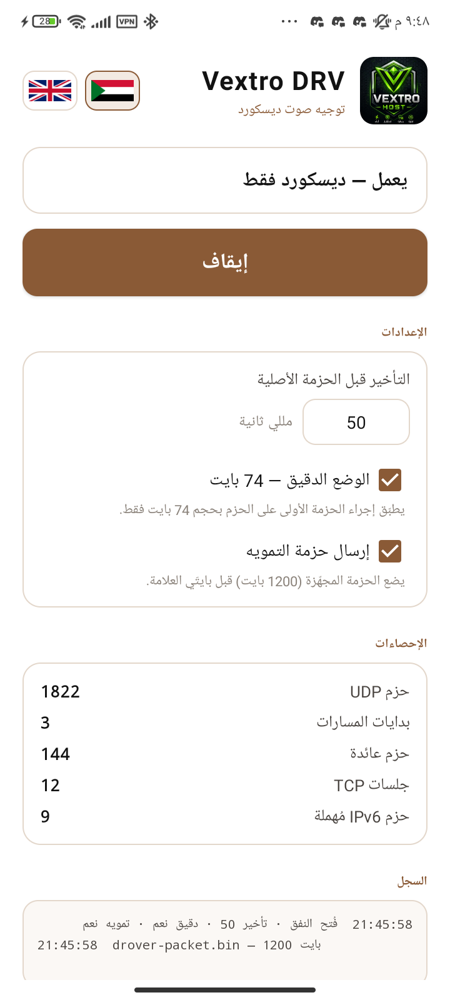
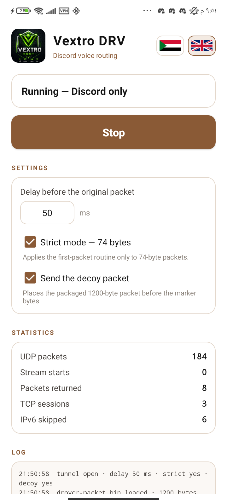

Drover للأندرويد — صوت ديسكورد يعمل على شبكات الإمارات المقيّدة
Vextro DRV تطبيق أندرويد يوجّه صوت ديسكورد عبر نفق يُدخل تطبيق ديسكورد وحده، ويعالج أول حزمة في كل مسار صوتي قبل أن تصل الشبكة — بدل تشغيل VPN شامل يبطّئ الجوال كله. لا روت، لا تسجيل دخول، لا سيرفر وسيط، واستهلاك بيانات شبه صفري.
فيديو تعريفي
موشن جرافيك يشرح المشكلة، طريقة العمل، والمزايا في 41 ثانية — بدون صوت.
1920×1080 · 30fps · بدون صوت · تحميل الملف
هل هذا هو Drover نفسه؟
Drover أداة مفتوحة المصدر لمستخدم hdrover تعمل على ويندوز: تعترض أول حزمة UDP
في مكالمة ديسكورد وتسبقها بحزمة تمويه، فتُصنَّف المكالمة بشكل مختلف على الشبكة.
Vextro DRV هو تنفيذ مستقل لفكرة Drover على أندرويد، مكتوب بـ Java على
VpnService، ولا يحتاج حاسبًا ولا كابلًا ولا برنامجًا على الكمبيوتر.
إن كنت تبحث عن «Drover للهاتف» أو «Drover للأندرويد» فهذا هو ما تبحث عنه.
كيف يعمل
ينشئ التطبيق نفقًا محليًا ويسمح بدخول حزمة واحدة فقط: com.discord.
كل حزمة تُقرأ من النفق تُفكَّك يدويًا (IPv4 + UDP أو TCP)، والمسارات الصوتية تُتابَع حسب العنوان والمنفذ.
عند أول حزمة بحجم 74 بايت في المسار تُرسل الكتلة المجهّزة (1200 بايت) ثم بايتان للعلامة،
ثم وقفة قصيرة، ثم الحزمة الأصلية. بعد ذلك يمر الصوت كما هو.
الاتصالات الأخرى في ديسكورد (البوابة، الشات، تسجيل الدخول) تمر عبر وكيل TCP محلي، لذلك لا تنكسر بقية مزايا التطبيق أثناء التشغيل.
تطبيق واحد فقط
ديسكورد يدخل النفق، وواتساب ويوتيوب والبنك تبقى على اتصالها الطبيعي.
تكلفة ~1.2 كيلوبايت
مرة واحدة لكل مسار صوتي، لا إعادة توجيه مستمرة ولا استهلاك باند.
بلا روت وبلا حساب
لا صلاحيات جذر ولا تسجيل دخول ولا سيرفر خارجي.


الأسئلة الشائعة
- هل يوجد Drover للهاتف أو للأندرويد؟
- نعم. Drover الأصلي لـ ويندوز فقط. Vextro DRV هو تنفيذ مستقل لفكرته على أندرويد، ويعمل داخل الجوال مباشرة بدون كمبيوتر.
- صوت ديسكورد لا يعمل في الإمارات — هل هذه هي المشكلة؟
- في كثير من الشبكات المقيّدة يُصنَّف اتصال الصوت فيُقطع، بينما النص والشات يعملان. التطبيق يعالج أول حزمة من كل مسار صوتي لتفادي هذا التصنيف. إن كان النص يعمل والصوت لا، فهذه الحالة بالضبط.
- هل أحتاج VPN أو اشتراكًا؟
- لا. التطبيق يستخدم
VpnServiceمحليًا لتوجيه تطبيق واحد، وليس نفقًا خارجيًا. لا اشتراك ولا سيرفر ولا حساب. لاحظ أن أندرويد يسمح بـ VPN واحد، فتشغيله يقطع أي VPN آخر. - هل يؤثر على بقية التطبيقات أو على سرعة النت؟
- لا. فقط
com.discordيدخل النفق، وبقية التطبيقات تخرج على الشبكة مباشرة. - هل يحتاج روت أو صلاحيات خاصة؟
- لا روت. يحتاج فقط الموافقة على طلب VPN من النظام مرة واحدة.
- على أي إصدارات أندرويد يعمل؟
- أندرويد 7.0 (API 24) وأحدث، على ARM أو ARM64 أو x86 — التطبيق بلا كود أصلي. مُختبَر على Redmi 9A بنظام أندرويد 11.
- هل هو آمن؟
- الكود مفتوح بالكامل على GitHub، بلا مكتبات خارجية، ولا يرسل بياناتك لأي جهة. الاستخدام شخصي وعلى مسؤولية المستخدم، وقد يخالف سياسة مزوّد شبكتك.
English
Vextro DRV is the Android implementation of the Drover technique: it opens a
VpnService tunnel that includes only com.discord, adapts the first UDP packet of
each voice stream (1200-byte block, two marker bytes, a configurable pause), and relays TCP so the
gateway and chat keep working. No root, no account, no remote server.
Use it when Discord text works but voice does not connect on a restricted network. Android 7.0+, ~333 KB, Arabic and English. Download the APK or read the source.
▶ Watch the 41-second motion graphics video (no audio) or download the MP4.